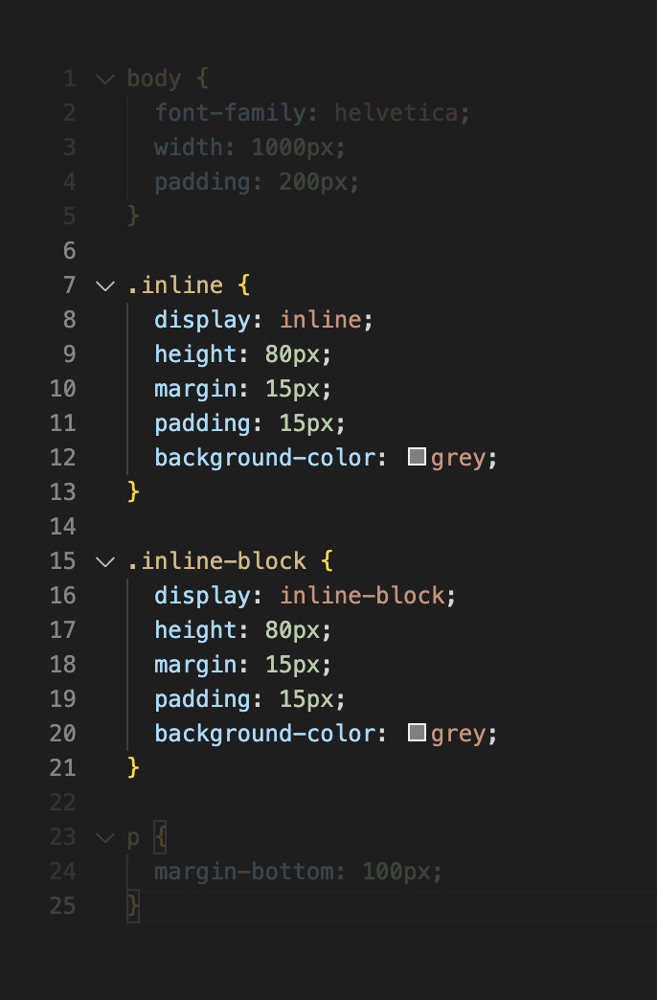
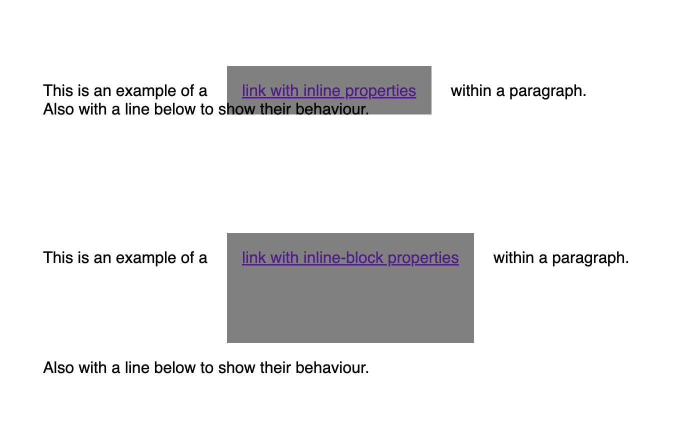
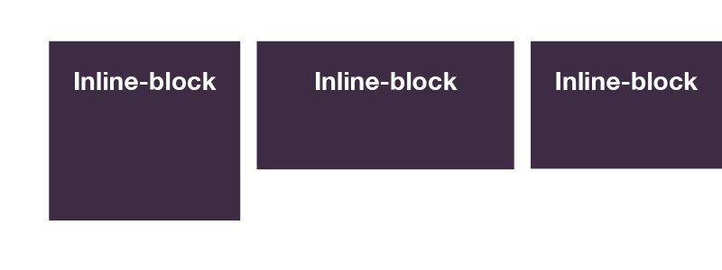

I've chosen this particular topic as it's the option that I most need to brush up on.
My current understanding after researching is:
An inline element is designed to nestle nicely inline, amongst other elements without disrupting the space and placement of surrounding content. An example of a common inline element is a link < a > within a paragraph. This nestles in neatly has styling limitations to prevent vertical margin, padding and size adjustment causing problems for lines above and below.
An inline-block element on the other hand will sit inline with other content but is free to accept all size, margin and padding adjustment, so will fit a different purpose. A regular block element, for example a header or a div, by default fills 100% of the width of the parent element that it sits within. If an inline-block property were applied to said header or a div, they would be able to have a width defined and sit side-by-side while retaining their styling properties.
A common example where inline-block is used is navigation buttons placed side-by-side. Inline-block will let these sit next to one-another while allowing style properties to size and space them as needed.
The example below is a quick and crude mock-up to show how the both act differently with surrounding content. Both have exactly the same size styling applied, though the inline-block will push out its neighbours. Note that the padding top and bottom of the inline example has blown out the grey square but not moved anything, while the height property has been ignored.
Height adjustments to inline elements (below-left) wont do much, whereas the same adjustments to inline-block elements (below-right) will.
An analogy.. hmmmmm.
Perhaps think of seats in a movie theatre. These are inline elements where it’s best not to stretch out and disrupt the next rows. You can buy 3 seats in a row if you want to some space either side but you can’t push the row in front out further.
An inline-block example might be setting up campsites in rows. One group might decide to expand their block all around and luckily there’s plenty of space for all the neighbours to move a bit. If these campsites were inline elements the neighbours would refuse to move, so would just get cross about their space being taken, resulting in a bad camping experience for all.